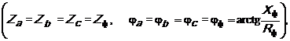
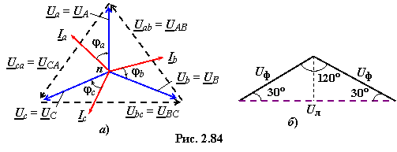

в симметричном трёхфазном приёмнике
Если сопротивления фаз приёмника одинаковые (см. рис. 2.82), т.е.

то нагрузка называется симметричной.
В этом случае модули фазных токов одинаковые и равны соответствующим линейным токам:
Ia = Ib = Ic =
Iф = IА = IВ = IС = Iл = Uф / Zф, (2.144)
где Uф= Ua = Ub =
Uc = UA = UB = UC − модули фазных напряжений приёмника и трёхфазного генератора.
На рис. 2.84а приведена векторная диаграмма напряжений и токов трёхфазного приёмника при симметричной нагрузке, носящей активно-ёмкостный характер: .

Как нпряжения так и токи Ia, Ib, Ic составляют симметричные звёзды, поэтому комплекс тока в нейтральном проводе, равный сумме комплексов фазных токов,
IN = Ia + Ib + Ic = 0, (2.145)
равен нулю и нейтральный
провод можно отключить. В результате получим эквивалентную трёхпроводную
систему включения приёмника с генератором по схеме Y−Y.
Для соединения приёмника звёздой
(см. рис. 2.82) очевидно соотношение между линейными и фазными токами:
Iф = Iл.
(2.146)